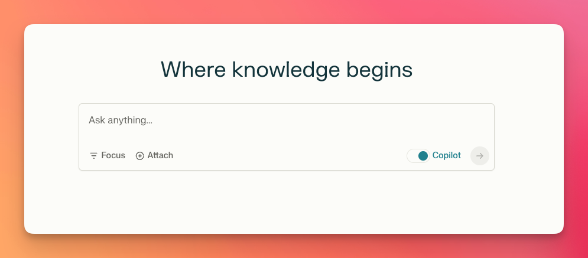
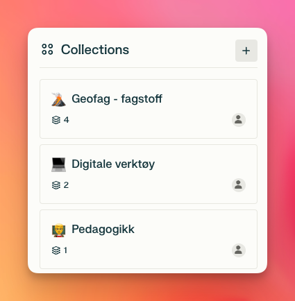
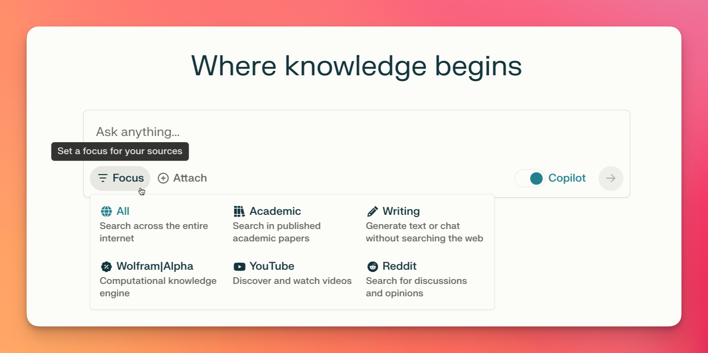

Dei siste månadane har eg prøvd ut det nye søkeverktøyet Perplexity. Verktøyet baserer seg på samtalebaserte søk etter informasjon og kunnskap, og nyttar kunstig intelligens i prosessen.
Perplexity was founded on the belief that searching for information should be a straightforward, efficient experience, free from the influence of advertising-driven models1
I den siste tida har firmaet hatt god vind i segla, etter at dei i sin andre innsamlingsrunde samla inn nesten 800 millionar kroner. Her fekk dei mellom anna støtte av Jeff Bezos (mannen bak Amazon) og teknologi-giganten NVIDIA.
Søke med kunstig intelligens?
Perplaxity nyttar kunstig intelligens på ulike måtar. Det vert nytta store språkmodellar (LLM) til å forstå spørsmålet og lage søkeord og setningar. Vidare skriv verktøyet eit svar eller ei oppsummering ut frå resultata til søket. I svaret vert det referert til kjelder og det ligg ved ei liste over alle resultata som er nytta i søket. Eit døme på eit resultat ser slik ut.

Fordelar
Det er fleire fordelar med eit slikt verktøy. Her er nokre av dei.
Kjelder og organisering
Kjelder vert oppgitt som ein del av svaret, i motsetnad til om ein spør store språkmodellar om faktaspørsmål som ligg i deira «generelle kunnskap». I tillegg er det lett å organisera resultat frå ulike søk i samlingar (Collections) og dela søkeresultata med andre. Det er òg mogleik for «samsøking» eller invitera andre bidragsytarar til å jobba i samme samling. Har du ein profil er det i tillegg enkelt å spørja vidare frå ein eksisterande tråd.

Annonsefritt
Eit anna pluss er at Perplexity ikkje er reklamebasert som t.d. Google. Det gjer at det ikkje på same måte er annonser og brukardata som avgjer kva resultat som kjem øvst i resultatlista når ein søker. I tillegg finns det ein gratisversjon av Perplexity som har mange av dei same funksjonane som betalingsversjonen.
AI-profil
Sist men ikkje minst kan du laga deg ein AI-profil. Dette er informasjon du kan gje Perplexity som kan påverka både søkinga. Du kan gje instruksjonar om interessefelt, alder, svarspråk, søkespråk og andre preferansar. Profilen kan vera «global», altså påverka alle søk, eller så kan det lagast eigne profilar for kvar samling. Denne profilen kan ein laga så avansert og spesifikk som ein vil, det er berre tida og interessen som set grenser 🤓
Fokus
For å spissa søket er det òg mogleikar for å velga eit fokus i søket. Her er det mogleg å spissa søket inn mot t.d. YouTube-videoar eller akademiske kjelder.

Ulemper
Sjølv om det er mange gode sider med eit verkøy som dette er det samstundes viktig å reflektera rundt dei dårlege sidene.
Kjeldekritikk og filterboble
Sidan det er store språkmodellar som baserer seg på sannsyn som lagar svara må ein vera kritisk til informasjonen, også her. I tillegg må ein sjå over kva kjelder som ligg til grunn for svaret. Det er ikkje sjølvsagt at kjeldene som vert funnen og brukt er dei beste.
Sjølv om søkeresultata er tydeleg på kva kjelder som vert inkludert i svaret, er det ikkje like klart kva resultat som vert ekskludert. Frå erfaringa vår med tradisjonelle søkemotorar er dei fleste kjend med filterbobla ein kan hamna i basert på dataspor ein legg att på nettet. Sidan Perplexity ikkje er reklame- og annonsebasert unngår ein den type påverknad av søkeresultata. Samstundes er det gjerne slik at Perplexity samlar informasjon om bruksmønster hjå brukarane som skal vera med på å tilpassa søkeresultata og gjera dei relevante. Dette kan igjen vera med på å filtrera ut kjelder som kanskje kunne vore interessante. Erfaringa til no er likevel at i dei aller fleste søka eg har gjort finn verktøyet gode og som oftast pålitelege og relevante kjelder.
Pro vs gratis
For å få tilgang til dei kraftigaste språkmodellane (GPT-4, Claude 2.1, Perplexity sin eigenutvikla modell osb.) må ein ha Pro-abonnement til 200 USD i året. Utan dette abonnementet er det GPT-3.5 som vert nytta. Som mange kjenner til er denne tidlegare varianten ganske underlegen samanlikna med dei nyaste modellane på feltet.
Med Pro-abonnement får ein òg ubegrensa tilgang til Copilot som hjelper til med å forstå spørsmålet og laga relevante søketermar. Dette er mogleg å få til i ChatGPT med å inkludera t.d. still relevante oppklaringsspørsmål i ledeteksten. Med pro-abonnement får ein også tilgang til Perplexity sine eigne API-ar og 5 USD i kreditt kvar månad.
Konklusjon
Alt i alt er Perplexity.ai ein spennande utfordrar til Google og dei etablerte tradisjonelle søkemotorane. Utviklinga går raskt og dei eigenutvikla modellane deira vert stadig betre. Når ein i tillegg ser på kor raskt dei samlar inn pengar og kven som støtter dei ser det ganske lovande ut for nykommaren. For min eigen del har eg bytta ut standard søkemotor i nettlesaren med Perplexity og lærer stadig nye ting om både verda og verktøyet 😊
Tips og triks 🚀
For å testa verktøyet skikkeleg og ikkje gløyma det vekk har er gjort det til standard søkemotor i nettlesaren min. Det er litt ulikt korleis ein gjer det frå nettlesar til nettlesar. Eg nyttar Brave som nettlesar (ein av fleire med personvern- og datasporingsfokus). Under innstillingar/søkemotor kan ein legga til Perplexity som søkemotor med følgjande lenke:
https://www.perplexity.ai/?q=%s
Med denne som standard vert alle søk frå adresselinja gjort i Perplexity. Om ein likevel vil gjera eit kjapt google-søk ligg det inne snarvegar for det. Startar ein søket/adresselinja med :g vert Google nytta likvel.